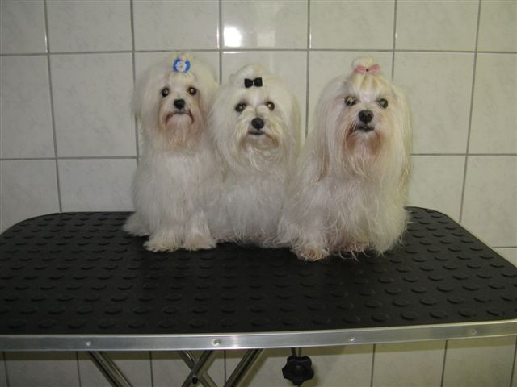

Alle tijd en aandacht
Uw hond krijgt individuele aandacht in de rustige omgeving van een trimsalon aan huis.
Hondentrimsalon in Barendrecht
Alle aandacht voor uw hond. Liefdevolle, vakkundige vachtverzorging door Jolanda Mudde bij ‘Van de Witte Rekeltjes’ aan de Noldijk.
Bel voor een afspraakOp afspraak · Maandag t/m vrijdag, 8:30–17:00

Welkom bij Jolanda
Mijn naam is Jolanda Mudde. Ik ben een gediplomeerd hondentrimster en heb een trimsalon aan huis.
Van een volledige trimbeurt tot alleen een wasbeurt: uw hond wordt verzorgd volgens de rasstandaard of in het door u gewenste model. Tijdens de trimbeurt zijn er geen andere honden in de salon aanwezig.
Het belang van uw hond staat altijd voorop.
Meer over de behandelingenUw hond krijgt individuele aandacht in de rustige omgeving van een trimsalon aan huis.
Een gediplomeerd trimster, professionele materialen en verzorging die past bij de vacht.
Een volledige trimbeurt of alleen wassen en föhnen: we bespreken graag uw wensen.
Behandelingen
De behandeling wordt afgestemd op het ras en uw wensen. Bij een volledige trimbeurt horen ook wassen, föhnen, nagels knippen en oorverzorging.
Bekijk de volledige trimbeurt →Uw hond kan ook terecht voor alleen wassen en föhnen. Neem contact op om de mogelijkheden voor uw hond te bespreken.
Meer over wassen en föhnen →Een korte kennismaking helpt uw pup wennen aan de trimsalon. Lees ook de tips voor verzorging tussen de bezoeken door.
Tips voor de eerste puppybeurt →Goed om te weten
Voor een vrijblijvende prijsopgave voor uw hond kunt u Jolanda bellen op 06-44366423. Bespreek daarbij welke behandeling u wilt.
Een volledige trimbeurt neemt enkele uren in beslag. Bespreek de planning bij het maken van uw afspraak.
Nee, tijdens de trimbeurt zijn er geen andere honden in de salon aanwezig. Uw hond krijgt alle aandacht van Jolanda.
Ja. Naast een volledige trimbeurt is ook alleen wassen en föhnen mogelijk. Bekijk de behandelingen of bel om een afspraak te maken.
U vindt Van de Witte Rekeltjes aan Noldijk 97, 2991 VH Barendrecht. De salon werkt alleen op afspraak, maandag tot en met vrijdag van 8:30 tot 17:00 uur. Bekijk de route en contactgegevens en de actuele sluitingsdagen.